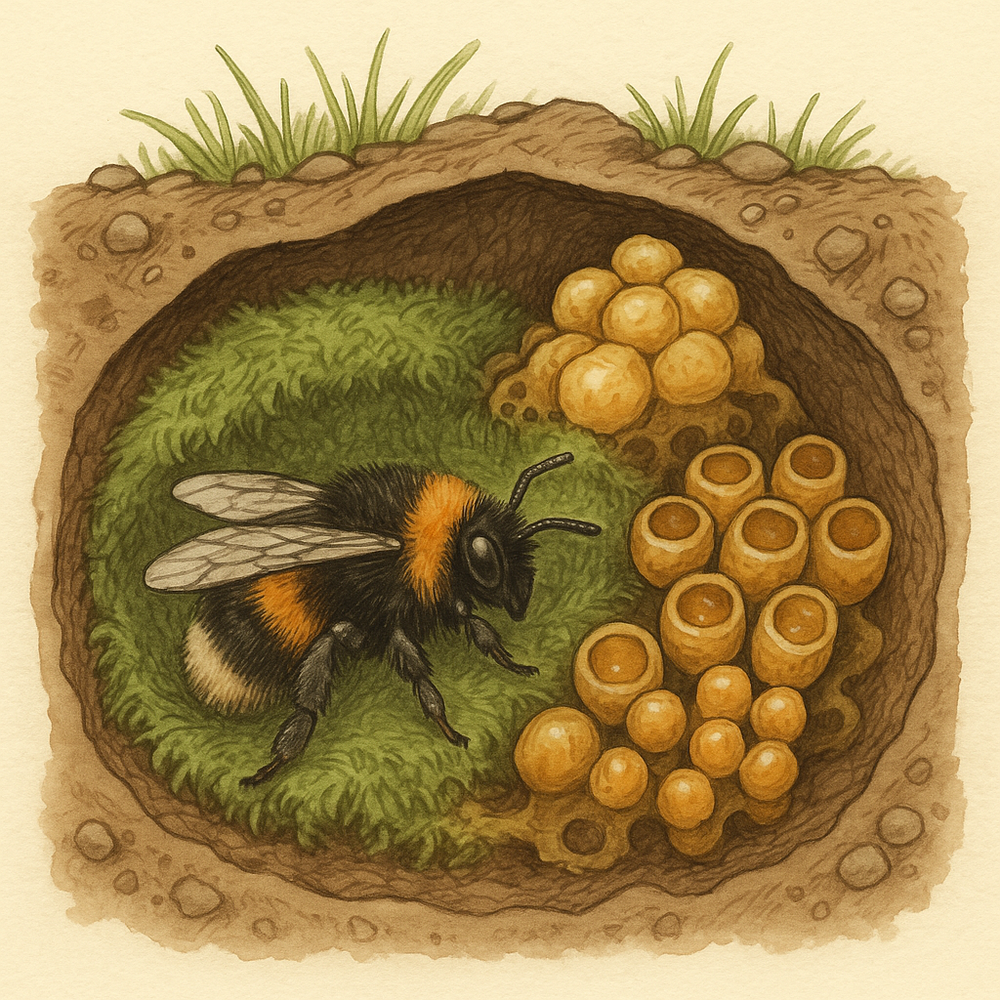

google.com
Я зникаю!
Показати/Приховати
Button1
Показати меню
Пункт 1
Пункт 2
Пункт 3
Пункт 4

Button2
Прокрути вниз ↓
Я з'явився при прокручуванні!
Прокрути вниз ↓
Tämä lohko tulee näkyviin vieritettäessä
Tämä lohko tulee näkyviin vieritettäessä
Tämä lohko tulee näkyviin vieritettäessä
Tämä lohko tulee näkyviin vieritettäessä